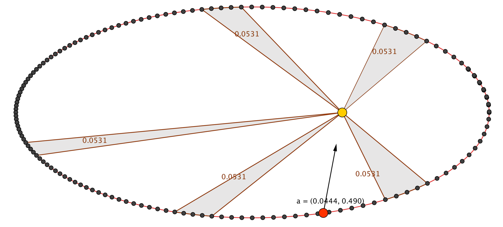
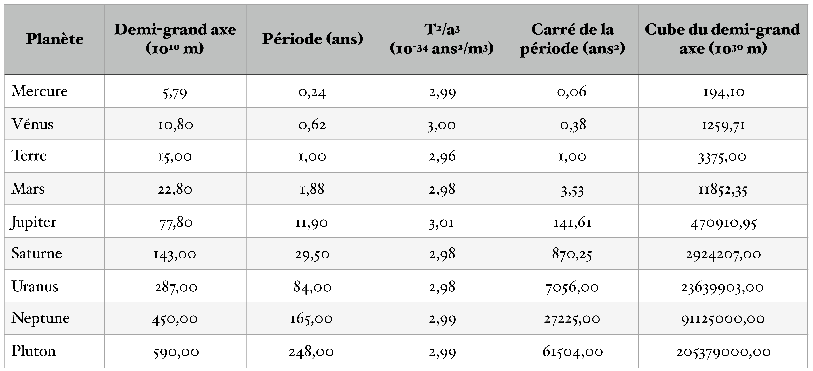
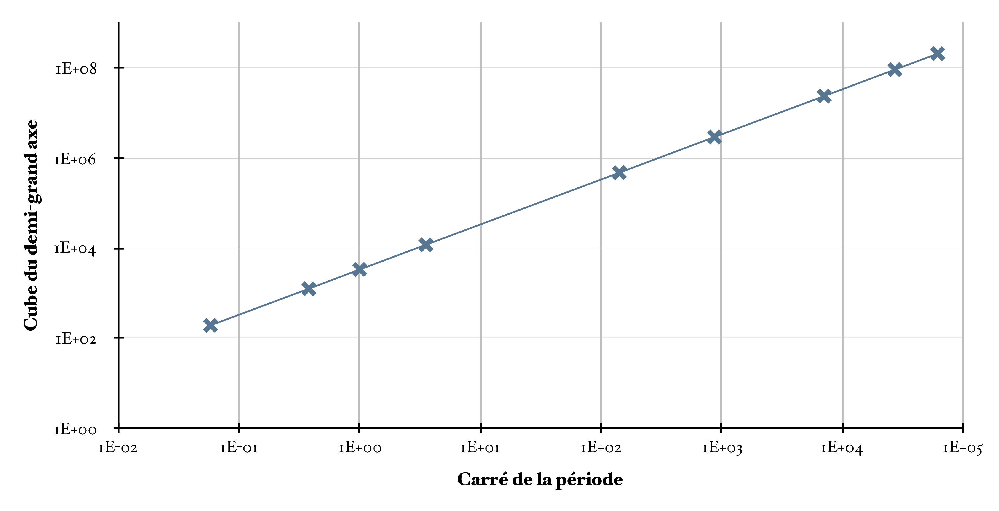
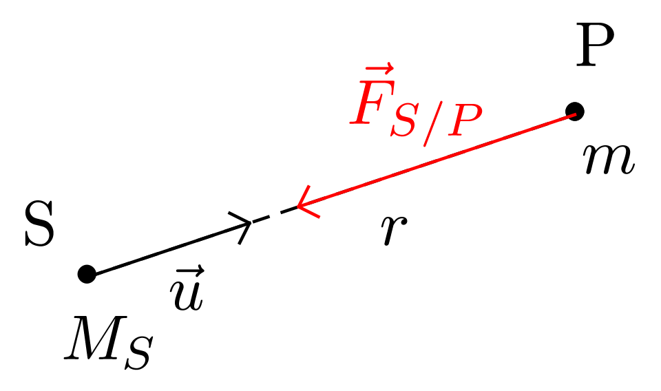
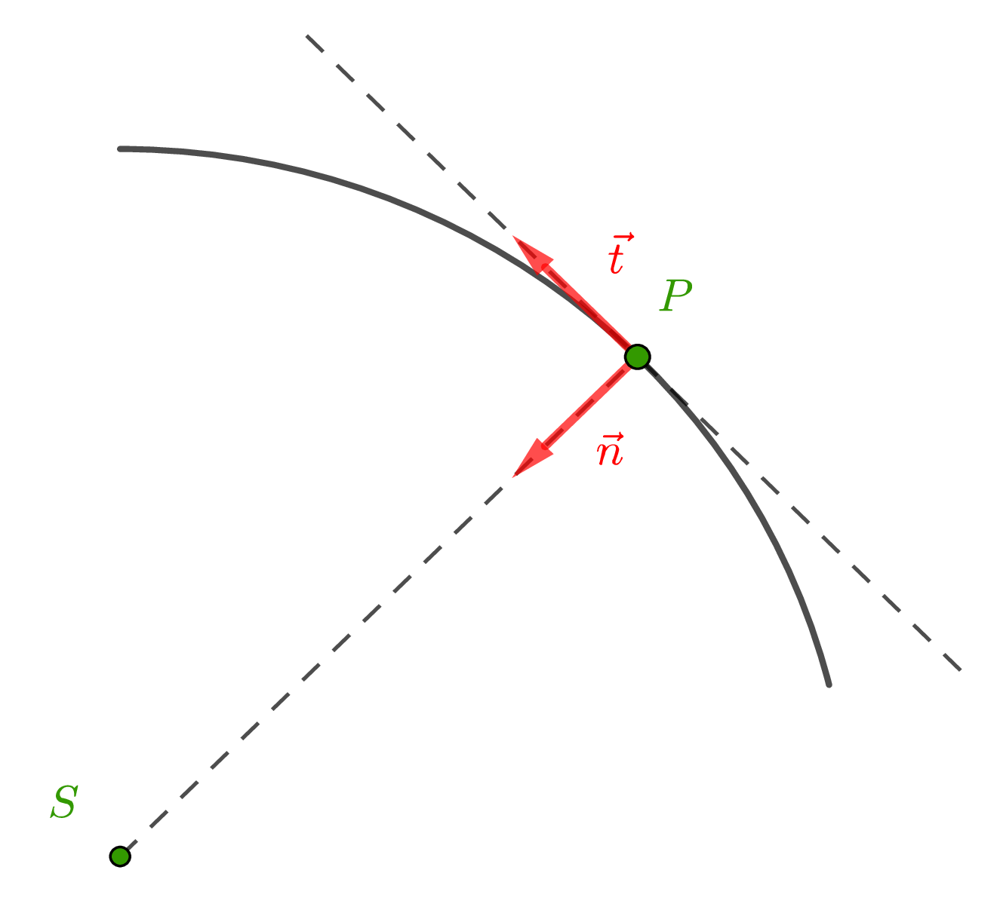

Les lois de Kepler
Présentation des lois
À la suite d’un dépouillement méticuleux des observations faites pendant de nombreuses années par l’astronome danois Ticho Brahe (1546-1601), Kepler (1571-1630) a établi trois lois empiriques décrivant les mouvements des planètes1.
Les deux premières lois furent publiées par Kepler en 1609 et la troisième en 1619. Les lois de Kepler conduisirent Newton à la découverte de la loi de la gravitation universelle.
-
(Loi des trajectoires) Chaque planète décrit autour du Soleil une ellipse dont le Soleil occupe un des foyers.
-
(Loi des aires) Les aires balayées par le rayon vecteur joignant le Soleil à la planète sont proportionnelles aux durées employées à les décrire. Autre formulation. Le rayon vecteur joignant le Soleil à la planète balaie des surfaces égales pendant des durées égales.
-
(Loi des périodes) Les carrés des périodes de révolution des planètes sont proportionnels aux cubes des demi-grands axes de leurs orbites : $$ \dfrac{T^2}{a^3} = \text{cste} $$
Illustration de la loi des trajectoires (première loi de Kepler)
 Illustration de la loi des aires (deuxième loi de Kepler)
Illustration de la loi des périodes (troisième loi de Kepler)
Que nous apprennent les lois de Kepler ?
Loi des trajectoires.
-
Le mouvement des planètes est plan ;
-
Le mouvement des planètes n’est pas toujours circulaire (même si, en pratique l’excentricité des différentes trajectoires peut être petite). Cette découverte fut importante à une époque où la figure géométrique parfaite restait le cercle ;
-
Cette loi apporte un crédit considérable au système de Copernic.
Loi des aires.
-
La vitesse d’une planète sur une trajectoire elliptique autour du Soleil n’est pas uniforme : sa valeur est maximale au périhélie et minimale à l’aphélie ;
-
La vitesse d’une planète sur une trajectoire circulaire est uniforme.
Loi des périodes.
-
Cette loi relie entre-elles toutes les planètes du système solaire. Elle montre que la durée de révolution autour du Soleil est d’autant plus grande que l’orbite de la planète est éloignée du Soleil.
-
On peut montrer que cette loi constitue un critère d’appartenance d’un astre au système solaire : tous les membres du système solaire sans exception, quelle que soit leur trajectoire, valident cette loi.
Champ gravitationnel
Force gravitationnelle
Réponse
$$ \vec{F}_{m_1 / m_2} = - G \dfrac{m_1 m_2}{d^2} \vec{u} $$
-
La force gravitationnelle est toujours attractive !
-
La force gravitationnelle introduite par Newton, pour les objets ponctuels, est généralisable à tous les objets à symétrie sphérique de masse.
Principe des actions réciproques
$$ \vec{F}_{m_2 / m_1} = - \vec{F}_{m_1 / m_2} $$
Champ gravitationnel $\vec{\mathcal{G}}$
-
Si au point $M_2$ on remplace le corps de masse $m_2$ par un corps de masse $m_3$, $$ \vec{F}_{m_1 / m_3} = - G \dfrac{m_1 m_3}{d^2} \vec{u} $$
-
Si au point $M_2$ on remplace le corps de masse $m_3$ par un corps de masse $m_4$, $$ \vec{F}_{m_1 / m_4} = - G \dfrac{m_1 m_4}{d^2} \vec{u} $$
La présence de la masse $m_1$ au point $M_1$ « communique » à tout point de l’espace la propriété suivante :
Relation entre la force gravitationnelle et le champ électrique en un point de l’espace
Toute masse $m$ placée en un point $M$ quelconque de l’espace est soumise à la force $$ \vec{F} = m\, \vec{\mathcal{G}} (M) $$ où $\vec{\mathcal{G}} (M)$ est le champ gravitationnel créé par la masse $m_1$ au point $M$.
Étude du mouvement
Détermination de l’expression du vecteur accélération d’une planète en interaction avec le Soleil
Caractériser le mouvement de la planète.
Réponse
-
Système = {Planète}
-
Interactions :
- Système - Champ gravitationnel $\vec{\mathcal{G}}$ créé par l’astre $S$ : $\vec{F} = m\, \vec{\mathcal{G}} (M)$
-
Référentiel = {Héliocentrique}
-
Schématisation : voir plus haut.
-
Deuxième loi de Newton : $$ m\, \vec{a}_P = m\, \vec{\mathcal{G}} (M) $$ ou $$ \vec{a}_P = \vec{\mathcal{G}} (M) $$
-
La planète est en chute libre sur le Soleil.
Expression de l’accélération de la planète en fonction du vecteur unitaire $\vec{u}$
Réponse
$$ \vec{a}_P = - G\, \dfrac{M_S}{r^2}\, \vec{u} $$
Vos connaissances en mathématique ne vous permettent pas de déterminer le vecteur vitesse par intégration de l’accélération puisque cette dernière n’est pas un vecteur constant ! Il faudra apprendre et utiliser le résultat donné dans la prochaine section.
Mouvements possibles dans le cas général pour un système possédant l’accélération dont l’expression a été démontrée dans la section précédente
Détermination de l’expression du vecteur vitesse de la planète dans le cas d’un mouvement circulaire
Remarque : Le centre de la trajectoire d’une planète en orbite circulaire est confondu avec le centre du Soleil.
Repère de Frenet
-
Le repère de Frenet (pour un problème à deux dimensions) est un repère mobile, dont l’origine est le point mobile $P$ étudié, et la base est constituée des vecteurs unitaires $\vec{t}$ et $\vec{n}$ dans le plan.
-
Le vecteur unitaire $\vec{t}$ a pour direction la droite tangente à la trajectoire au point $P$ et pour sens le sens du mouvement ;
-
Le vecteur unitaire $\vec{n}$ a pour direction la droite normale à la droite tangente au point $P$ (c’est donc la direction du rayon de la trajectoire dans le cas d’un cercle) et est dirigé vers le centre de la courbure.
Dans le repère de Frenet,
-
La vitesse d’une planète s’écrit : $$ \vec{v} = v\, \vec{t} $$
-
On peut démontrer que l’accélération d’une planète s’écrit : $$ \vec{a}_P = \dfrac{\mathrm{d}v}{\mathrm{dt}}\, \vec{t} + \dfrac{v^2}{r}\, \vec{n} $$ où $r$ est le rayon du cercle.
L’expression de l’accélération doit être admise et apprise, en notant bien que c’est la valeur de la vitesse $\vec{v}$ qui intervient dans la dérivée.
Expression de la vitesse de la planète
Réponse
On possède désormais deux expressions différentes de l’accélération :
-
Résultat de l’écriture de la deuxième loi de Newton : $$ \vec{a}_P = - G\, \dfrac{M_S}{r^2}\, \vec{u} $$ que l’on peut aussi écrire, dans la base de Frenet, $$ \vec{a}_P = G\, \dfrac{M_S}{r^2}\, \vec{n} $$ puisque $\vec{u} = - \vec{n}$.
-
Résultat de l’étude cinématique dans la base de Frenet : $$ \vec{a}_P = \dfrac{\mathrm{d}v}{\mathrm{dt}}\, \vec{t} + \dfrac{v^2}{r}\, \vec{n} $$
-
Par identification, on obtient : $$ \begin{cases} \text{Selon } \vec{t} \text{ :} & \dfrac{\mathrm{d}v}{\mathrm{dt}} = 0\\ \text{Selon } \vec{n} \text{ :} & \dfrac{v^2}{r} = G\, \dfrac{M_S}{r^2} \end{cases} $$
Réponse
$$ \dfrac{\mathrm{d}v}{\mathrm{dt}} = 0 \Leftrightarrow v = \text{cste} $$ Si le mouvement d’une planète est circulaire, alors il est uniforme.
Réponse
$$\boxed{ v = \sqrt{G\, \dfrac{M_S}{r}}\ } $$ La vitesse d’une planète est indépendante de sa masse (comme pour toute chute libre), est d’autant plus petite que le rayon de son orbite est grand, et dépend de la masse du corps attracteur $M_S$.
Période de révolution de la planète, troisième loi de Kepler
Réponse
La période de révolution $T$ de la planète autour de l’astre attracteur $S$ est la durée nécessaire pour parcourir l’orbite circulaire à la vitesse constante $v$, donc : $$ T = \dfrac{2 \pi r}{v} = \dfrac{2 \pi r}{\sqrt{G\, \dfrac{M_S}{r}}} $$ Finalement $$ \boxed{ T = 2 \pi \sqrt{\dfrac{r^3}{GM_S}} } $$
La période augmente avec la distance de la planète par rapport au corps attracteur.
Réponse
$$ T^2 = 4 \pi^2 \dfrac{r^3}{GM_S} $$ donc $$ \boxed{ \dfrac{T^2}{r^3} = \dfrac{4 \pi^2}{GM_S} } $$ On retouve la troisième loi de Kepler et on comprend pourquoi elle peut servir de « test d’appartenance du corps au système Solaire » : le rapport est constant pour tous les satellites qui ont pour corps attracteur le corps de masse $M_S$.
Satellites géostationnaires
Dans cette partie, le corps attracteur est la Terre et on considère le mouvement de ses satellites.
Plan de la trajectoire.
La trajectoire d’un satellite « geostationnaire » est un cercle situé dans le plan équatorial de la Terre (plan contenant l’équateur). La vitesse de rotation autour de l’axe des pôles est égale à celle de la Terre ; le satellite apparaît immobile à un observateur terrestre.
Période de révolution.
La période de révolution d’un satellite « geostationnaire », dans le référentiel géocentrique, est égale à la période de rotation propre de la Terre : $$ T = \pu{86 164 s} \qquad \text{(jour sidéral)} $$
Altitude d’un satellite géostationnaire.
Réponse
On peut écrire : $T^2 = \dfrac{4 \pi^2}{GM_T} (R_T + h)^3$ puisque la distance entre le centre de la Terre et le satellite est : $r = R_T + h$. Donc : $$ h = \left( \frac{GM_T T^2}{4 \pi^2} \right)^{1 / 3} - R_T $$ A.N. $h = \left( \frac{\pu{6,67e-11} \times \pu{5,98e24} \times \pu{86164}^2}{4 \pi^2} \right)^{1 / 3} - \pu{6,38e6} = \pu{3,58e7 m} = \pu{3,58e4 km}$.
Conclusion.
Dans le référentiel géocentrique, tous les satellites « géostationnaires » évoluent sur une trajectoire circulaire située dans le plan équatorial, à une altitude $h = \pu{35800 km}$ environ. Leur période de révolution est égale à un jour sidéral : $T = \pu{86164 s}$.
-
Ces lois sont donc de nature très différente des lois de Newton : elles n’expliquent pas le mouvement mais le décrivent. Ceci dit, il faut garder à l’esprit qu’avant le travail titanesque de Kepler personne ne savait prédire la position des astres errants avec une grande précision. ↩︎